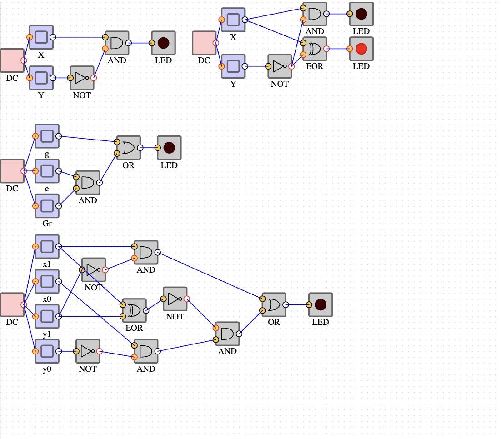

Purpose:
(Right Click and Open In New Tab To View Image Enlarged)
Purpose:
The purpose of this lab is to solidify your understanding of the basics of Boolean logic and how that is used to implement computers.
Grade: 86.00/100
Purpose:
The purpose of this lab is to get more familiar with number systems and colors
Grade: 77.00/100
Purpose:
The Purpose of this lab was to use Boolean Algebra to simplify x'y + xy' + xy expression using the distributive, OR complement, and null element. From there we created truth tables off of the simplified version of the expresion. Using that the truth tables we were able to create circuits based off of them.
Grade: 99.00/100
Purpose:
The purpose of the this lab was to get us comfortable using CARDIAC and to understand it as well. In this lab I used OP Codes which are digits that are assigned to Mnemoic's to test my inputs in the end my outputs calculted the total of inputs we went through before reaching a negative and the numbers total when added together. Which was all done through the cardiac accumulator.
Grade: 100.00/100
Purpose:
The purpose of this lab was to begin getting comfortbale being using tranquility. In this lab we created something similar to the CARDIAC accumulator which added the sum of the postives number, the amount of positive numbers, and average number for the postive numbers of what was inputted.
Directions: From here click Lab 6 to begin testing the code. Once on the page click start which will then ask for number inputs. Input in positive numbers and then at random select a negative number to input. Once that negative has been inputed the ouput will return a the "Sum of postive numbers", "The amount of positive numbers entered", and "The average of the postive numbers".
Grade: 100.00/100
Purpose:
The purpose of this lab was to download the set code that the professor provided and make the code executable/functioning by implementing in print statements for integers and strings. Followed by that we were to record the work we did within the code by adding in comment into the important lines of the code.
Directions: To test the executable code click Lab 7 to test the code for reference enter in "20" to return the same table as me other than that mess around with the input numbers, and see what returns and attempt to figure out the pattern
Grade: 100.00/100
Purpose:
The purpose was to connect everything that we have learned from the previous tranqility labs to create/fix the slope graph provided to us.
Directions: Click Lab 8 to execute the working code. When asked to enter input it will ask for a y0, y1, x0, and x1 creating a slope. If you remember slop formula y2-y1/x2-x1. In this case it will be y1-y0/x1-x0. The slope of the integers that you enter must be >= 1 (less than or equal to one) if the slope is to exceed one then the slope will not work correctly.
Grade: 100.00/100
Purpose:
The purpose of this lab was to was to get comfortable with cryptpgraphy by creating public key's that can be decrypted and encrypted.
At this point we have of the quater we had completed all lab sections from here only lectures had taken place. In the lectures we discuessed further into Artifical Intellegence and Computer Theory. There isnt no work to really be gone over for these two week's, but almost just a reflection period of what we had done from the previous weeks.
There are three projects that were completed during this quater for CS164
Document(click here for documentation)
.Grade: 89.00/100
Grade: 70.00/100
Eating> Chilling> LayingDown> PutToBed.
Grade: 110.00/100
76.33%
Reflection: This was my first class ever being exposed to multiple languages, machine code, cryptography, binary code, boolean algebra, and etc. For now I would say that I am proud of this grade, but I hope to learn alot more from the future and do great things with what I learned from this class.